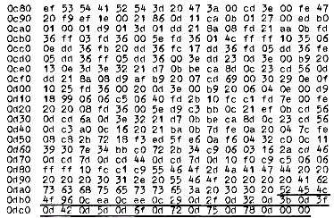

Nascom Journal |
Juli 1981 · Ausgabe 7 |
Herr Harald Kögler aus Menden hat uns eine Modifikation der UFO-JAGD aus Heft 4,5/81 geschickt, sodaß das Spiel jetzt auch mit Nasbug T2/T4 lauffähig ist. Falls Ihnen die Abschießerei der Ufos zu langweilig werden sollte, können Sie das Programm wenigstens zum Test des Relocator-Programms aus dem letzten Heft verwenden, denn wir haben die Relocator-Informationen an das Programm angehängt. ( Sie sind im Listing unterstrichen).
Tippen Sie das Programm also an die gewünschte Speicherstelle ( z.B. ab 1000 ) , laden Sie den Relocator (z.B. ab 0C80 wie im letzten Heft) und starten Sie die Programmverschiebung z.B. mit EC80 C80 1000 . Nun müßte das Programm in unserem Beispiel bei 1000 gestartet werden können.
Wir sind gespannt auf Ihre Erfahrungsberichte!
ufo-jagd t2/t4
Jeder Abonnent kann kostenlose Kleinanzeigen bis 40 Wörter aufgeben!
Suche Floppy
(mögl.Nascom Nassys 1)
Suche System zur Sprachanalyse/-Synthese für
Z80
Ulrich Wallis
Tel. _____ – _____ (nach 17 Uhr)
Nascom 2 Zu verkaufen 48 K RAM
Veroframe, Tastaturgeh.,
d.Dokumentation 2 Jahrgänge N.Journal, Software
Angebot an Frank Rupprecht
________.__
____ ______
_____ _____
Verkaufe 2 St. 32K RAM – 4K ROM
NAS – Memory boards ohne Speicher ICs
je. DM 120.—
NAS I/O Board mit CTC
kompl. neuw., DM 240.—
Nascom 2 ohne Tastatur u. BASIC DM 400.—
Peter Krause
___________ __
_ _______ __
Suche Hexdump 8K – ROM – BASIC (Nascom 2, Nassys )
R. Blauhut _________ __
____ _______
Tel. _____/_____
TX 80 1300.–
Nassys 1 in ROM 75.–
Biete 8K BASIC in EPROM Tausche
gegen Basic in Rom
Uwe Kafka
__________ _
____ _________
Tel. _____/ _____
Biete „mini 400“ UKW-Portable
Suche SSTV-Interface für
Nascom(- Bus) DG1 BF __________
Raum Weser-Ems :
Suche Gedankenaustausch Nascom 1 u. 2
Verkaufe
CLD – Floppy für Nascom 1 u. 2 DM 1150 .–
32 k RAM voll bestückt DM 400 .–
Siemens T 100 Fernschreiber mit Lochstreifenleser und Stanzer, Gehäuse,
Interface für Nascom 1 u. 2 DM 300.–
ASCII TTY Drucker Großbuchstaben, alle BASIC – Zeichen, mit Interface
für Nascom 1u.2 DM 380.
Udo von Mulert
______ ______ ___
____ ____ _ Tel. ____/______
| Seite 18 von 20 |
|---|